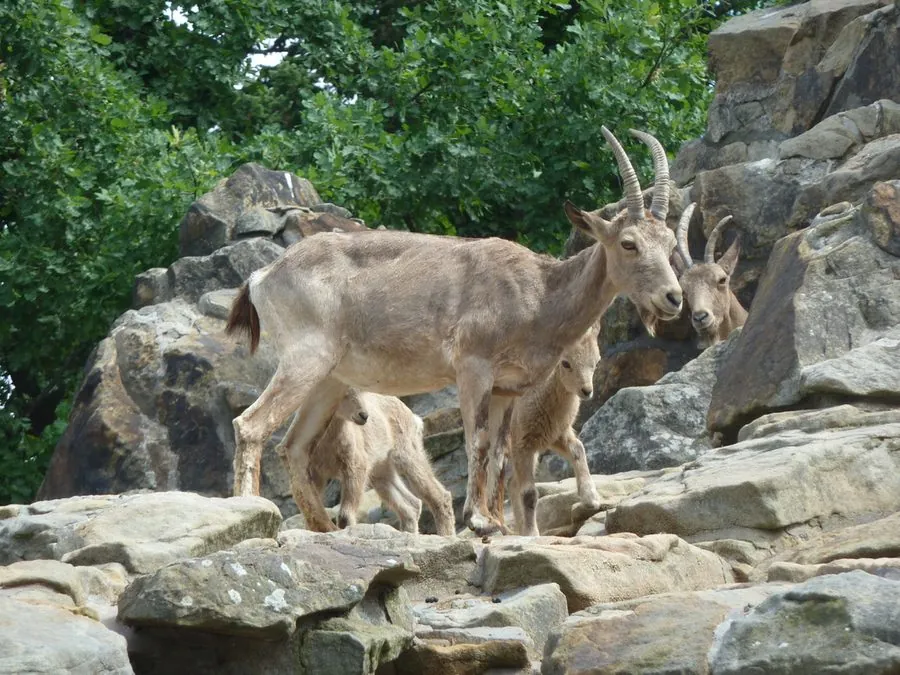

哺乳动物 · 动物界
北山羊 Capra ibex

高山裸岩地带的野生山羊，雄羊长着向后弯曲的长刀状角，角长可超过 1 米，是攀岩能力极强的山地动物。
- 分类
- 门脊索动物门纲哺乳纲目偶蹄目科牛科属山羊属
- 栖息环境
- 海拔 1000–5000 米的裸岩、高山草甸与灌丛
- 地理分布
- 欧洲阿尔卑斯山、西亚、中亚至中国西部和北部的高山
- 保护级别
- IUCN 无危（LC）；中国国家一级保护动物
物种志
北山羊体长 1.2–1.7 米，肩高 0.7–1.0 米，体重 40–120 kg，雄性明显大于雌性。它的被毛为浅棕至灰褐色，腹部较浅，脊背有一条深色纵纹；雄羊长着粗大、向后弯曲如弯刀的长角，角长可达 1 米以上，角上有一道道横棱，雌羊角较短。
北山羊分布于欧亚大陆的高山地带，从欧洲阿尔卑斯山、西亚、中亚到中国西部和北部，栖息于海拔 1000–5000 米的裸岩、高山草甸和灌丛。它善于攀爬陡峭岩壁，能利用岩缝和凸起保持平衡，主食草、苔草和灌木嫩叶，多在晨昏取食，冬季下移到较低海拔。北山羊结成雌羊群和雄羊群，繁殖季雄性用角互相撞击争夺配偶，撞击声在山谷中回响；雌兽妊娠期约 150–180 天，每胎 1–2 仔。因长期保护，部分种群数量回升，中国将其列为国家一级保护动物。
形态与习性
- 食性草、苔草与灌木嫩叶
- 体长1.2–1.7 m，肩高 0.7–1.0 m
- 体重40–120 kg，雄性明显大于雌性
- 寿命野外约 12–18 年
- 繁殖妊娠期约 150–180 天，每胎 1–2 仔
- 角雄羊角向后弯曲，长可达 1 m 以上
- 攀岩能在近乎垂直的岩壁上攀爬跳跃
趣味知识
- 北山羊的角长可达 1 米以上，角上有明显的横棱。
- 它能在近乎垂直的岩壁上攀爬，蹄缘硬、蹄底软。
- 繁殖季雄羊用角互相撞击，声音在山谷中回荡。
- 中国将北山羊列为国家一级保护动物。